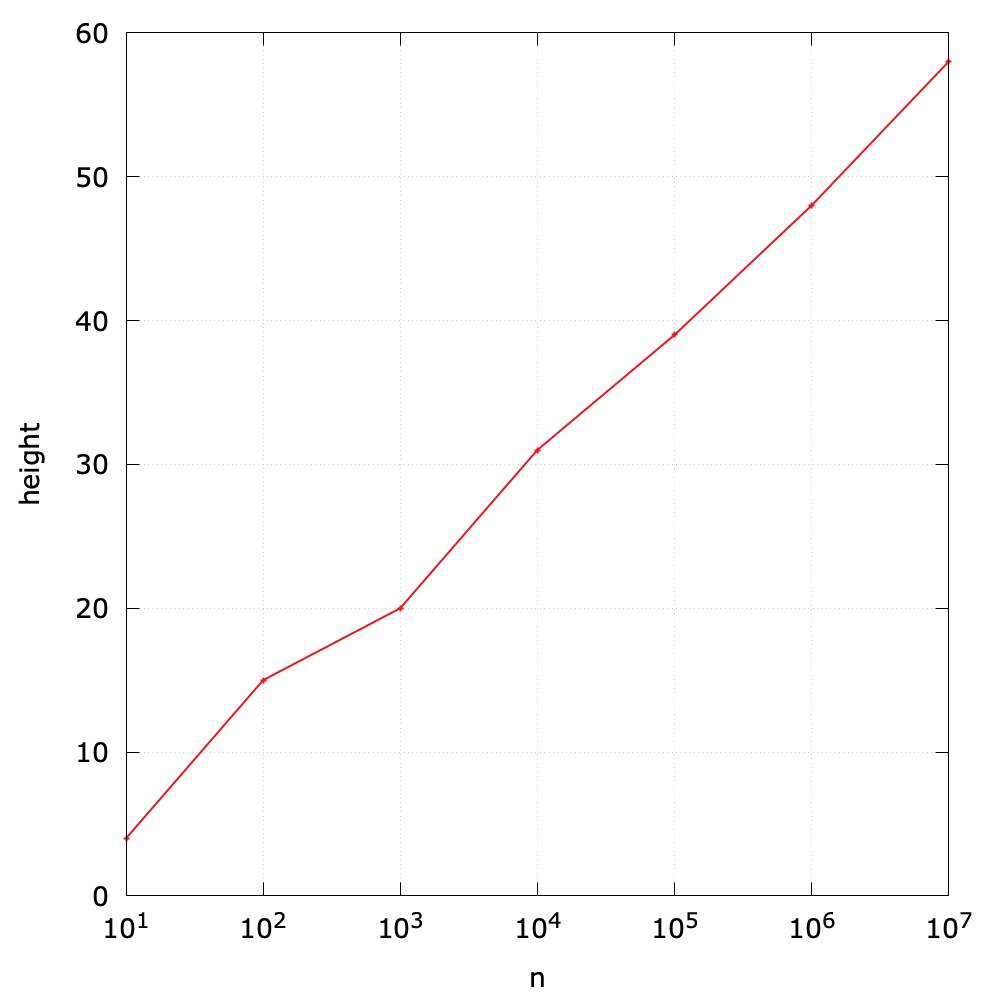

Binary Search Trees (2)
According to the definition of a BST, it is ordered in terms of a set of keys.
If we project the keys in a BST such that all keys in each node's left subtree appear to the left of the key in the node and all keys in each node's right subtree appear to the right of the key in the node, then we always get the keys in sorted order. Therefore, it is possible to define the predecessor and successor of a node in a BST.
Order-based operations
In the last section, we have showed how to implement some order-based operations, such as min() and max(). In fact, the implementation of remove() also relies on the successor of a node.
In what follows, we consider more order-based operations.
- Floor and ceiling: As for
floor(), it returns the largest key which is not greater than the given key, whileceiling()returns the smallest key which is not less than the given key. For example,floor(5)is 4,ceiling(13)is 14, butfloor(0)returnnullbecause there is no key equal or less than 0.

Interchanging right and left (and less and greater) gives ceiling().
- Select. It returns the key of a given rank. The smallest key is with rank 0, while the largest one is with rank (size - 1). For example,
select(3)returns 6, andselect(9)returns null.
- Rank. It is the inverse method of
select(), and returns the rank given a key. For example,rank(6)is 3.
- Range. Given a key lower bound k1 and upper bound k2, it returns all keys in the range of
[k1, k2]. To design a recursive algorithm, we need an extra parameter to store the candidates.

public List<Key> range(Key low, Key high) {
assert low.compareTo(high) <= 0;
List<Key> result = new ArrayList<>();
range(root, result, low, high);
return result;
}
Tree walk
Given a tree, how can we traverse nodes? In this subsection, we will introduce three tree traversal algorithms. Note the in-, pre- and post- here are used to denote the position of the root while traversing.
- Inorder tree walk. It visits the key of the root between the values in the left subtree and those in its right subtree. To put it in another way, it visits "inorder of left subtree", and then "root", and finally "inorder of right subtree". As for the BST above, it will traverse the keys in an ascending order (1 -> 3 -> 4 -> 6 -> 8 -> 10 -> 12 -> 14 -> 18).
The following is to print all keys in a BST using inorder tree walk:

- preorder tree walk. It visits the root before the nodes in either subtree. To put it in another way, it visits "root", and then "preorder of left subtree", and finally "preorder of right subtree". As for the BST above, it will print 8 -> 3 -> 1 -> 6 -> 4 -> 10 -> 14 -> 12 -> 18.
- postorder tree walk. It visits the root after the nodes in its subtrees. To put it in another way, it visits "postorder of left subtree", and then "postorder of right subtree", and finally "root". As for the BST above, it will print 1 -> 4 -> 6 -> 3 -> 12 -> 18 -> 14 -> 10 -> 8.
Curious readers can explore how to design tree traversal algorithms without recursions.
Performance Analysis
In a BST, all operations take time proportional to the height of the tree, in the worst case.
As for N random keys, the height1 of a BST is about \(\lg{N}\). The following Java code is used to compute the height of node x in a BST:
private int height(Node<Key> x) {
if (x == null) return -1;
else return 1 + Math.max(height(x.left), height(x.right));
}
public int height() {
return height(root);
}
Here is a simple experiments to show the relationship between the height and the size of a BST. The size ranges from \(10^1\) to \(10^7\):
However, in the worst case, a BST can be degraded into an ordered linked list if one inserts ordered keys sequentially. In this case, the height will be N.
As for the search/insert operation, we can summarize the time complexities of three common data structures we have learned:
| Algorithm (DAT) | Worst case cost after N inserts | Average case cost after N random inserts |
|---|---|---|
| sequential search (unordered linked list) | search: \(O(N)\) insert: \(O(N)\) | search: \(O(N)\) insert: \(O(N)\) |
| binary search (ordered array) | search: \(O(lg{N})\) insert: \(O(N)\) | search: \(O(lg{N})\) insert: \(O(N)\) |
| binary tree search (BST) | search: \(O(N)\) insert: \(O(N)\) | search: \(O(lg{N})\) insert: \(O(lg{N})\) |
Therefore, this motivates us to seek better algorithms and data structures, which we consider next. The basic idea is also straightforward: keep the height of a tree always being \(O(\lg{N})\).
1 The theoretical cost is \(1.39\lg{N}\).